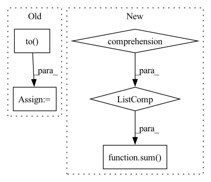

Pattern ID :25050
Before Change
def inferencer(word, topk = 3):
if topk == 0:
in_vec = torch.from_numpy(en_glyph.word2xlitvec(word)).to( device)
out = model.inference(in_vec)
out = corr_model.inference(out)
// result =[ hi_glyph.xlitvec2word(out.cpu().numpy()) ]
result = [ hi_vocab.get_word(out.cpu().numpy()) ]
return resultAfter Change
emb_list = [ emb_model.get_word_embedding(out) for out in p_out_list]
c_result = [annoy_obj.get_nearest_vocab(emb, count = knear) for emb in emb_list ]
c_result = sum( c_result, []) // delinieate 2d list
result = pred_contrive(c_result, p_result)
return result
In pattern: SUPERPATTERN
Frequency: 3
Non-data size: 5
Instances Fragment ID: 76864406
Project Name: ai4bharat/indiannlp-transliteration
Commit Name: 124785a70aee998936ecafdc7cb6605846f3b6e2
Time: 2020-07-22
Author: josephgeobenjamin@gmail.com
File Name: tasks/infer_engine.py
M Class Name: AnonimousClass
N Class Name: AnonimousClass
M Method Name: inferencer(3)
N Method Name: inferencer(2)
M Parent Class:
N Parent Class:
M File Name: tasks/infer_engine.py
N File Name: tasks/infer_engine.py
M Start Line: 57
M End Line: 79
N Start Line: 75
N End Line: 87
Before Change
adjacency_matrix: to.Tensor) -> to.Tensor:
edge_slice = edge.get_edge_slice()
neighbors_slice = edge.get_start_node_neighbors_without_end_node()[0]
messages_from_the_other_neighbors = to.zeros(node.features.shape[0]).to( self.device)
for reset_node_index in neighbors_slice:
reset_node = self._create_node(node_features, adjacency_matrix, reset_node_index)
reset_edge = self._create_edge(node, reset_node)
reset_edge_slice = reset_edge.get_edge_slice()
reset_gate_output = self._pass_through_reset_gate(messages, node, reset_edge, node_features)
messages_from_the_other_neighbors += to.mul(reset_gate_output, messages[reset_edge_slice])
return self.u_gru_current_memory_message[edge_slice].matmul(messages_from_the_other_neighbors)
def _pass_through_reset_gate(self,After Change
node_features: to.Tensor) -> to.Tensor:
edge_slice = edge.get_edge_slice()
neighbors_slice = edge.get_start_node_neighbors_without_end_node()[0]
return self.u_gru_current_memory_message[edge_slice].matmul(sum([to.mul(to.sigmoid(
to.add(
to.add(self.w_gru_update_gate_features[edge_slice].matmul(node_features[node.node_id]),
self.u_gru_update_gate[edge_slice].matmul(messages[node.node_id, reset_node_index])),
self.b_gru_update_gate)).long(), messages[node.node_id, reset_node_index])
for reset_node_index in neighbors_slice] ) )
def _pass_through_reset_gate(self,
messages: to.Tensor, Fragment ID: 76864391
Project Name: kovanostra/message-passing-neural-network
Commit Name: 46b48a64ed3b792489f1ffde06ae212a7af5471a
Time: 2020-05-02
Author: kovanostra@gmail.com
File Name: message_passing_nn/model/graph_encoder.py
M Class Name: GraphEncoder
N Class Name: GraphEncoder
M Method Name: _keep_or_reset_messages(5)
N Method Name: _keep_or_reset_messages(6)
M Parent Class: nn.Module
N Parent Class: nn.Module
M File Name: message_passing_nn/model/graph_encoder.py
N File Name: message_passing_nn/model/graph_encoder.py
M Start Line: 198
M End Line: 208
N Start Line: 203
N End Line: 210
Before Change
block_dim,
EMBEDDING_DIM)
blk_embed = blk_embed.to(dtype).to( device)
test_embed = ParallelMixVocabEmbeddingBag.from_pretrained(
blk_embed=blk_embed,
lbmgr=lbmgr,After Change
comm_func = reduce_forward // need all_reduce
if enable_qr:
pretrain_embed = QREmbeddingBag(sum([FIELD_DIMS[i] for i in group] ) ,
qr_bucket_size,
EMBEDDING_DIM)
else: Fragment ID: 76864397
Project Name: hpcaitech/freqcacheembedding
Commit Name: c4a062cbe73906f8701b27e27d66140903fd8da9
Time: 2022-07-14
Author: jiatong.han@u.nus.edu
File Name: tests/test_embeddings/mv_embedding_test.py
M Class Name: AnonimousClass
N Class Name: AnonimousClass
M Method Name: check_mv_embeddingbag(1)
N Method Name: check_mv_embeddingbag(0)
M Parent Class:
N Parent Class:
M File Name: tests/test_embeddings/mv_embedding_test.py
N File Name: tests/test_embeddings/mv_embedding_test.py
M Start Line: 84
M End Line: 119
N Start Line: 84
N End Line: 127